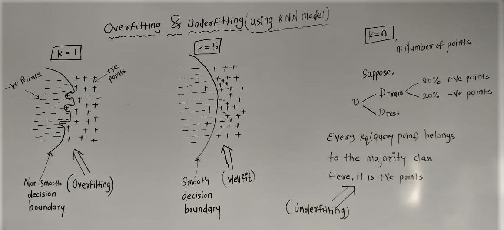
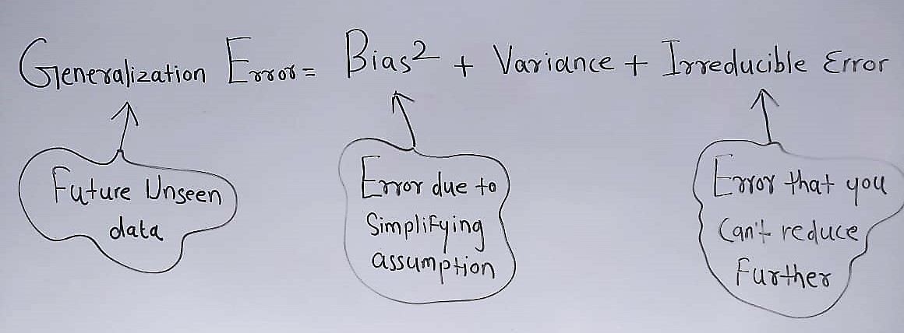
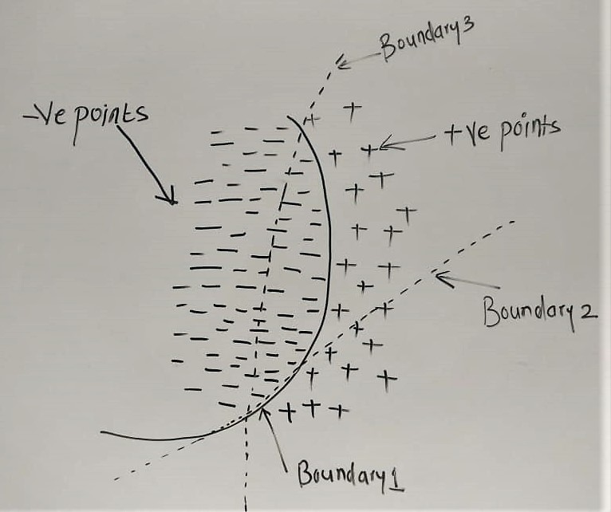
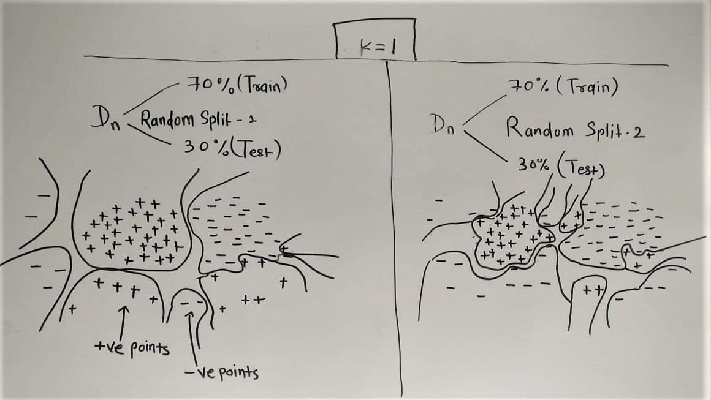

Bias-Variance Tradeoff decomposition is a way of analyzing a learning algorithm's expected generalization error with respect to a particular problem as a sum of three terms, the bias, variance, and a quantity called the irreducible error, resulting from noise in the problem itself.
Before understanding bias-variance tradeoff, we need to understand the concept of overfitting and underfitting. Overfitting and underfitting are very closely related to bias and variance terms, but mind that, both the concepts are equally important to understand 'generalization error'(Unseen data).
Content
- How overfitting and underfitting works?
- What is bias and variance?
- Understanding bias-variance tradeoffFurther Reading
- Further Reading
How overfitting and underfitting works?
We can explain overfitting and underfitting concepts using KNN(K-Nearest Neighbour) model. As the value of 'k' changes, model starts to fall in the overfit or underfit zone. How it works, is explained in the following image.
As we can see in the above image,when k=1, we get overfit model, because decision boundary considers each and every point in the data.When k=n, we starts to underfit as model starts to favour the class which has majority in the dataset. We must always find the decision boundary between overfit and underfit zone,(here it is k=5),which is also considered as a well fit model
We understood the geometric intuition behind the overfitting and underfitting concept. Now lets understand the few cocepts like bias and variance.
What is bias and variance?
To understand the mathematical basis, we have a concept like 'bias-variance tradeoff', which comes from the
field of
statistical/theoratical machine learning.
Bias(underfitting): Set of assumptions that the learner uses to predict outputs, given inputs that it has
not encountered.
In machine learning, one aims to construct algorithms that are able to learn to predict a certain target
output.
To achieve this, the learning algorithm is presented some training examples that demonstrate the intended
relation of input and output values.
Then the learner is supposed to approximate the correct output, even for examples that have not been shown
during training.
Without any additional assumptions, this problem cannot be solved exactly since unseen situations might have
an arbitrary output value.
The kind of necessary assumptions about the nature of the target function are subsumed in the phrase
'inductive bias'.
Variance(overfitting): An error from sensitivity to small fluctuations in the training set.
Small changes in training dataset results in very different model(decision surfaces) and this large changes
in the model
is generally referred as 'high-variance model'.
We understood the concept of bias and variance,now lets understand our main concept of 'bias-variance tradeoff'
Understanding bias-variance tradeoff
The mathematical formula for 'bias-variance tradeoff':

Generalization Error: Future unseen data(like, using test dataset to evaluate a model).
Bias: Error due to simplifying assumptions.
Variance: Error caused by model due to slight change in training data.
Irreducible Error: Error that can't reduce further.
We must reduce the generalization error to get unbiased low variance model.
And to achive that, we should reduce the bias and variance in the model.
Now lets understand the bias term first,by assuming that we have 80% -ve points and 20% +ve points in our
training dataset

Here we can easily see that non linear(curve) decision boundary(boundary-1) can easily separate -ve points form +ve points. But suppose we made the simplifying model assumption that our model will use line or plane(boundary-2 or boundary-3) to separate -ve points from +ve points.We can see that, if we use boundary-2 and boundary-3 as a decision surface then we will misclassify most of the points as wrong class labels.
Our training dataset is highly imbalanced towards -ve points, then for every query point, model will predict
-ve points as a resultant class label.(that means model is underfitting)
That means due to simplifying assumption, our model will become 'high bias model'.
We understood the high bias concept, now lets undestand how high variance affects our model to overfit.
Now lets understand the variance term.Random splitting is performed two times and KNN model is trained with k=1

From figure, we can evaluate that small changes in training dataset result in very different model(decision surface) and this large changes in the model is generally referred as 'high variance model'(that means model is overfitting).
*** Values are assumed to understand the concept better,(bias + variance + irreducible error)
k = 1 , 10 + 100 + 3 ---> 113 (Overfit)
k = 5 , 12 + 10 + 3 ---> 25 (Well fit)
k = 1 , 100 + 2 + 3 ---> 105 (Underfit)
So at the end we conclude that,there is no escaping the relationship between bias and variance in machine
learning.
~~> Increasing the bias will decrease the variance.
~~> Increasing the variance will decrease the bias.
There is a trade-off at play between these two concerns and the algorithms you choose and the way you choose
to configure them are finding different balances in this trade-off for your problem.
In reality, we cannot calculate the real bias and variance error terms because we do not know the actual underlying target function. Nevertheless, as a framework, bias and variance provide the tools to understand the behavior of machine learning algorithms in the pursuit of predictive performance.
Further Reading
This section lists some recommend resources if you are looking to learn more about bias, variance and the bias-variance trade-off.